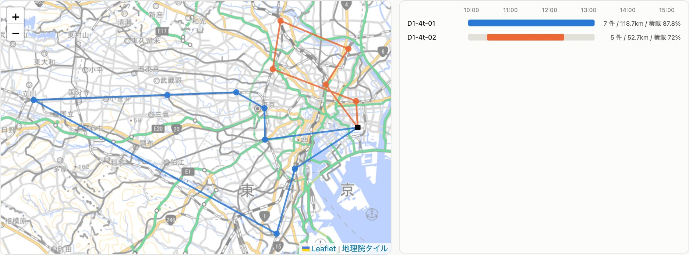
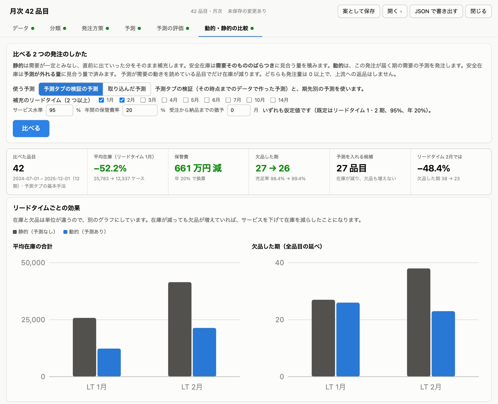
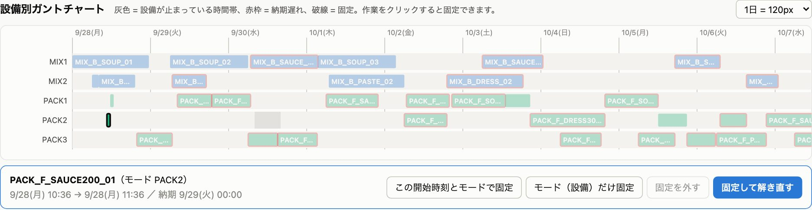
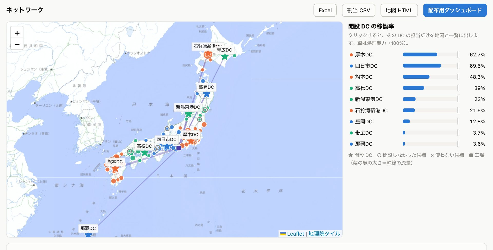
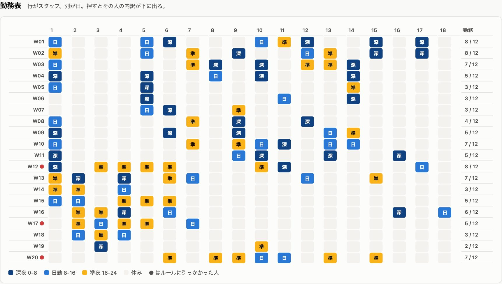
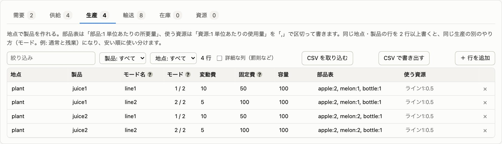
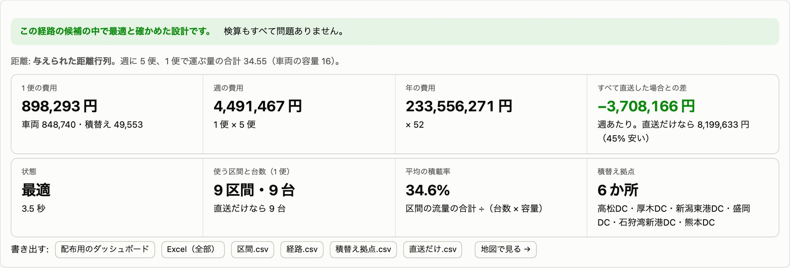
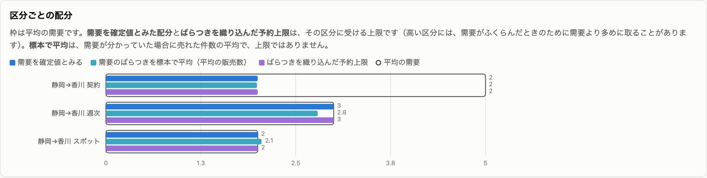
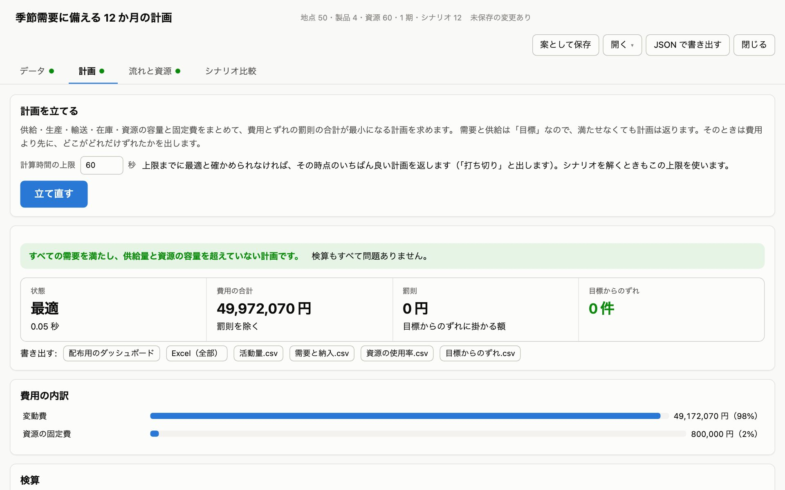
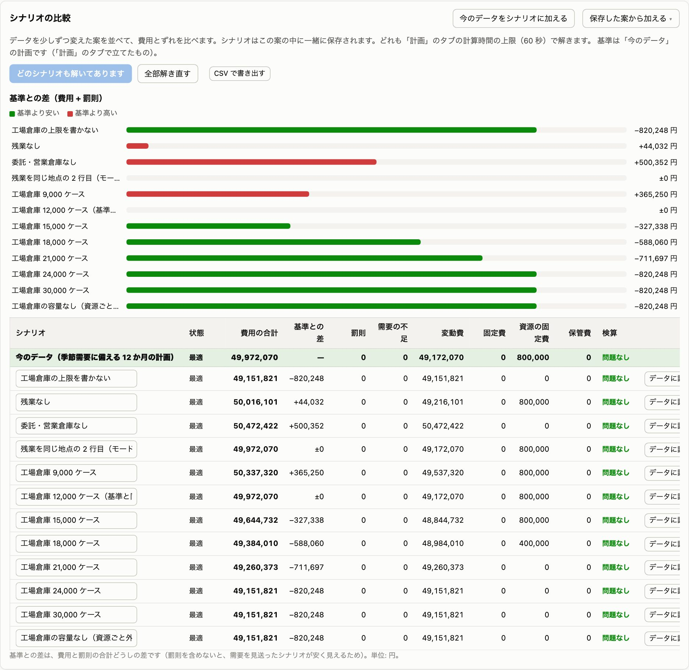

表を直して、ボタンを押すだけ。難しい数理最適化の数式は一切不要。配車計画・需要予測・在庫方策・生産ライン・設備ガント・スタッフ勤務表まで——計画担当者が自ら触って確かめられる、10のサプライチェーン最適化Webアプリケーション。

10個のアプリはすべて同じ画面設計と思想で作られています。一度使い方を覚えれば、配車でも在庫でも生産でも、迷うことなく操作できます。
Webブラウザ上で表のセルを直接打ち直すか、自社のCSVファイルをドラッグ＆ドロップで取り込みます。
✓ 入力チェック機能： 入力ミスがあると「直してください」や「注意」が即座に通知され、誤った計算を防ぎます。
「解く」ボタンを1回クリックするだけ。バックエンドの高速最適化エンジンがミリ秒〜数秒で制約を満たす最適解を導き出します。
✓ バックエンド自動起動： Gurobi, OR-Tools, SCOP, OptSeq 等の産業用ソルバーが自律稼働します。
地図ルート、設備ガントチャート、在庫推移グラフ、KPIカードで結果を一目で確認。ワンクリックでCSVやJSONで保存できます。
✓ 案（シナリオ）保存： 条件を変えた複数の計画を「案」として保存し、並べて比較できます。
サプライチェーンの上流（調達・在庫）から下流（幹線・配車・シフト）まで、現場の計画業務をまるごとカバーする専用ツール群です。タブをクリックして各アプリの画面と機能をご覧ください。
荷受け時間枠（タイムウィンドウ）、車両ごとの積載重量・容積上限、大型車進入規制、実道路の所要時間行列を考慮し、総走行時間を最小化する巡回ルートを秒速で算出。地図上に車両ごとの走行経路をカラフルに描画します。
このアプリの操作を体験する ↓売上金額と需要のばらつきを掛け合わせたABC-XYZ 9象限分類、LightGBMや指数平滑化による需要予測、そして「予測を日次の発注点につなぐ動的在庫シミュレーション」を1つのアプリで完結。在庫45%削減のインパクトを可視化します。
社内データでの試用を相談
設備・作業員・治具などの再生可能資源の制約と、作業間の先行関係、段取り替え時間を考慮し、全体のメイクスパン（完了時刻）または納期遅れペナルティを最小化する詳細ガントチャートを自動編成します。
社内データでの試用を相談
全国の顧客需要分布から、配送リードタイム300km制約を満たす物流拠点（DC）の候補地と最適箇所数を特定。総費用の45%を占める「DC固定費」と「輸送費」のトレードオフを地図とグラフで分析します。
社内データでの試用を相談
夜勤明け休み（インターバル）、連続勤務日数上限、スキル資格保有者の同時配置、スタッフ各自の希望休を厳密に順守。特定の人に負担が偏らない公平で実行可能なシフト表を自動生成します。
社内データでの試用を相談
品目ごとの部品構成表（BOM展開）と日次生産能力の上限をもとに、段取り替え回数と在庫保管費用のトレードオフを解決。過剰在庫を持たず、かつ欠品を起こさない最適な日次ロットサイズを計算します。
社内データでの試用を相談
拠点間の長距離輸送（OD需要）を、大型車単位で運行する幹線サービスネットワーク設計。ハブ拠点での積替え集約を活用し、トラックの空きスペースを削減して総運行便数を最小化します。
社内データでの試用を相談
輸送トラックの荷台枠、倉庫保管スペース、航空・鉄道座席などの有限容量を、運賃・価格帯の異なる複数顧客クラスにどう割り当てるか（レベニューマネジメント）。資源の限界価値（入札価格）を瞬時に算出します。
社内データでの試用を相談
調達先から複数工場、配送センター、顧客に至るサプライチェーン全体を1つの数理モデルに集約。各工程の固定費や輸送費、生産制約を丸ごと勘案し、全社総費用最小の総合事業計画を立案します。
社内データでの試用を相談
「需要が20%増えたらどうなる？」「燃料費が高騰したら？」といった疑問に答える分析エクスプローラ。前提パラメータをスライダーで動かし、コストやサービスレベルの感度分析や複数シナリオの並列比較が可能です。
社内データでの試用を相談
アプリの使い勝手は極めてシンプルです。下の注文表の黄色いセル（荷量・時間帯）をクリックして値を変更し、「解く」ボタンを押してみてください。
| 配送先 | 荷量 (kg) | 指定時間枠 | 住所 |
|---|---|---|---|
| 店舗A（渋谷） | 東京都渋谷区道玄坂 | ||
| 店舗B（新宿） | 東京都新宿区西新宿 | ||
| 店舗C（品川） | 東京都品川区東品川 |
数理最適化の計算結果を実際の現場で安心して使うために、マニュアルに明記された厳格なルールと仕組みが全アプリに組み込まれています。
「最適解」と出ても鵜呑みにしません。ソルバーとは独立した検算ルーチンが、時間枠・積載量・夜勤明け休息などの全制約を二重チェックし、合格した解だけを提示します。
結果を出したあとにデータや設定を1箇所でも変更すると、画面に「古い」という印が自動点灯。以前のデータで作られた古い計画を誤って現場に流す事故を防ぎます。
編集中データはブラウザに下書きとして自動保存されるため、タブを閉じても作業を継続可能。完成した計画は名前をつけて「案」として保存し、いつでも呼び出せます。
「現在使っているExcelの注文表を取り込めるか」「工場の設備条件を反映できるか」など、専門スタッフが社内データでの無料フィジビリティ診断を実施します。